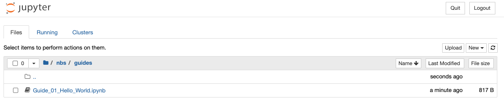
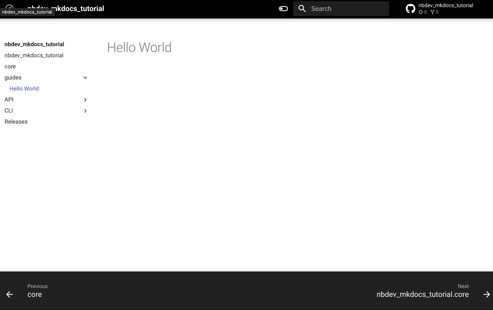
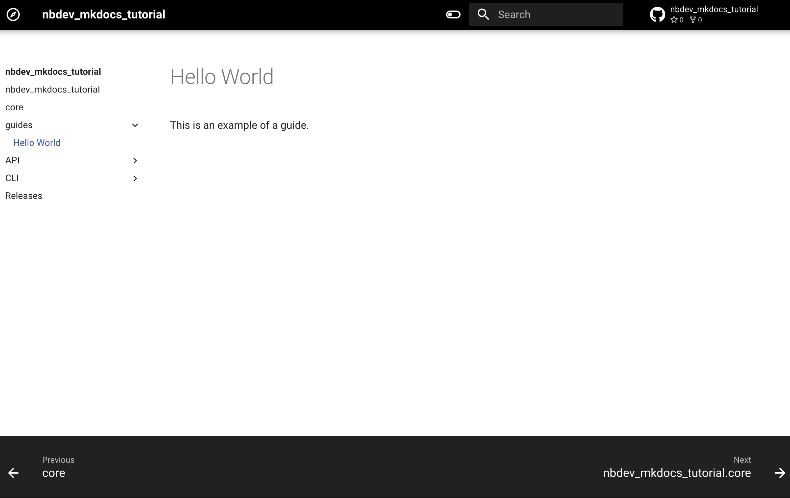
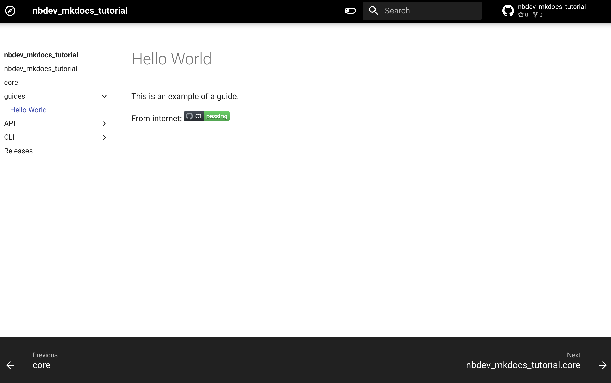
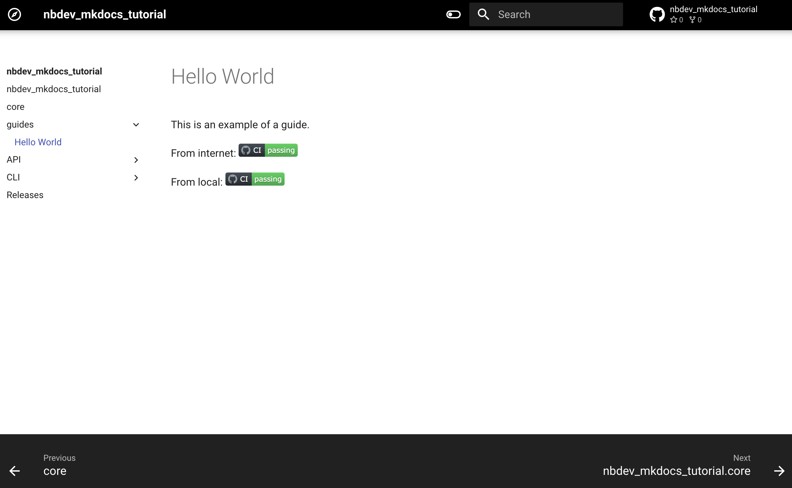

Adding guides¤
With Material for nbdev, you can easily add a step-by-step tutorial or comprehensive how-to guide in your documentation.
All you need to do is add the new notebooks to your notebook directory
(The directory set in nbs_path in your project’s settings.ini file)
and run nbdev_mkdocs preview to preview the documentation. The
information from the newly added notebooks will automatically populate
in the navigation, making it easily accessible to your audience.
Note
If you have set the custom_sidebar=True your project's settings.ini file, the newly added guide or tutorial will not appear in navigation automatically. To make it appear, manually edit the project's sidebar.yml or _quarto.yml file and include the sections and contents.
Adding a new guide¤
Now, let’s add a new guide to our nbdev_mkdocs_tutorial project. Run
the following command from the project’s root directory to create a new
guides directory:
mkdir nbs/guides
From the Jupyter home tab, navigate to the guides directory and create
a new notebook by clicking on the New dropdown menu. Rename the notebook
as Guide_01_Hello_World and create a new markdown cell with the
following contents. This will be the title of the guide:
# Hello World
If everything is done correctly, the guides directory will look like this:

Now, run the following command in the terminal to preview the changes in the browser:
nbdev_mkdocs preview
The sidebar will now have a new menu called Guides, and when you click
on it, the documentation should look like this:

Now, add another markdown cell just below the title cell and paste the following content:
This is an example of a guide.
Save the notebook, stop the server and re-run the nbdev_mkdocs preview
command to preview the changes.
Click on Guides menu in the sidebar, and the documentation should look
like this:

Adding images to the guide¤
In the guides, you can include images from your computer as well as images from the internet.
Adding an external image¤
Let’s add an image from the internet to our guide. To keep things
simple, we’ll add the nbdev_mkdocs_tutorial repo’s GitHub CI badge to
our guide.
Copy and paste the below URL in your preferred browser to view the CI
status badge for the nbdev_mkdocs_tutorial repo:
Info
In the following URL:
- Replace {user} with your github username
- If you have used a different name for your repo, replace nbdev_mkdocs_tutorial with it.
https://github.com/{user}/nbdev_mkdocs_tutorial/actions/workflows/test.yaml/badge.svg
Make a new markdown cell at the bottom of the
Guide_01_Hello_World.ipynb notebook and paste the below content
Info
In the following URL:
- Replace {user} with your github username
- If you have used a different name for your repo, replace nbdev_mkdocs_tutorial with it.
From internet:

Save the notebook, stop the server and re-run the nbdev_mkdocs preview
command to preview your changes.
Click on Guides menu in the sidebar, and the documentation should look
like this:

Adding a local image¤
For adding images from your computer, the images must be saved within
your notebook directory (The directory set in nbs_path in your
project’s settings.ini file). Let’s make a directory called images
within the guides directory and save the CI status badge image as
badge.svg.
Note
The directory name images is used as an example. You can refer to images located in any directory as long as they are inside your project's notebook directory (The directory set in nbs_path in your project's settings.ini file).
Duplicate the above cell and replace From internet: text with
From local: and http url with images/badge.svg
Save the notebook, stop the server and re-run the nbdev_mkdocs preview
command to preview your changes.
Click on Guides menu in the sidebar, and the documentation should look
like this:
